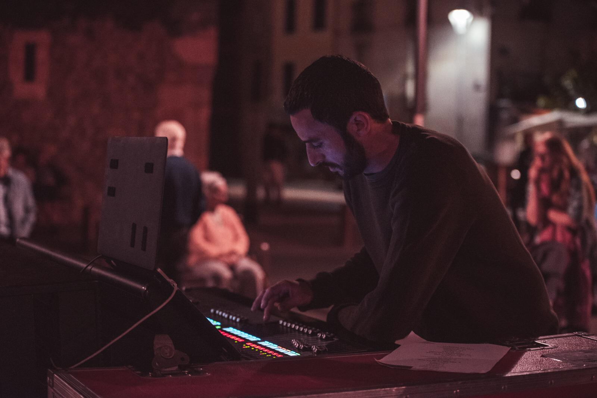

Juan Carlos Ramos Moll

Sobre mí
Buenas soy Juan Carlos Ramos Moll tengo 38 años, trabajo como técnico de sonido de
espectáculos en directo.
Soy de Denia un pueblo de la provincia de Alicante,
finalicé mis estudios de sonido en 2006 en el centro IES Veles e Vents del
Grau de Gandia.
Desde entonces, he trabajado en espectáculos en directo haciendo
las funciones de técnico de sonido en FOH y Monitores.
Tengo una hija que se llama Laia y tiene 10 años.
He estado pensando en cambiar de profesión, ya que me gustaría tener un empleo
en el que no me tenga que desplazar tanto, y decidí empezar a formarme en programación.
Estoy muy contento con la decisión, por que he descubierto un mundo de conocimientos riquísimo
en el que me siento muy agusto aprendiendo nuevos conceptos.
Por desgracia a causa de la pandemia, no pude hacer las prácticas del curso de DAM que finalicé
el año pasado. Por este motivo pienso que no he podido conseguir empleo en el sector, ya que
en todas las ofertas piden experiencia. He decidido seguir formándome en programación
e intentar tener la posibilidad de realizar las prácticas y así poder conseguir empleo.
Aficiones
Como es de esperar mi principal afición es la música, mas que una afición es una pasión.
Me gustan todo tipo de estilos, especialmente el Jazz, funky, Reggae y electronica.
Toco el bajo electrico y el Djembe (percusión Africana).
Además me gusta mucho leer, sobre todo libros de fantasia épica y ciencia ficción.
Me encanta ir a la playa con mi familia y bañarme en el mar.
Tambien me gusta la ciencia principalmente la astronomía y escuche bastantes podcasts sobre el tema.